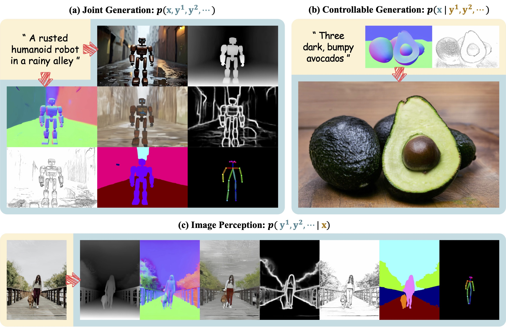
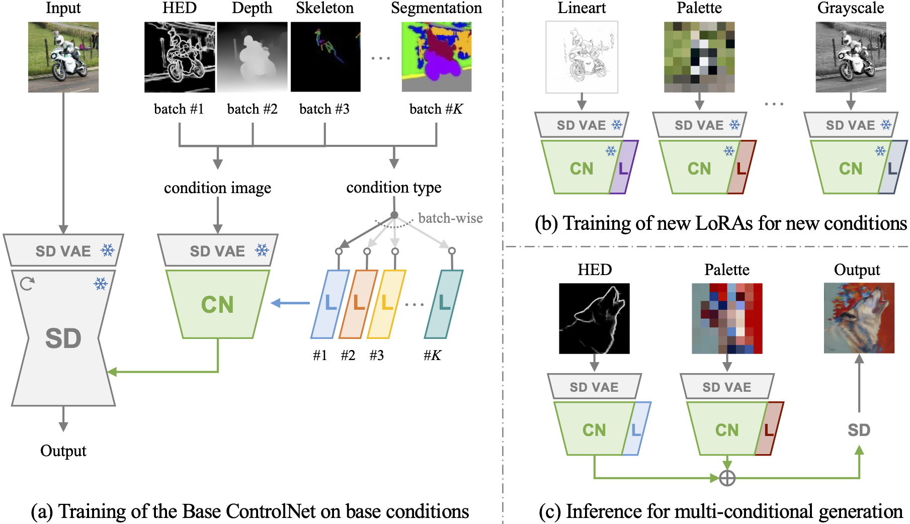
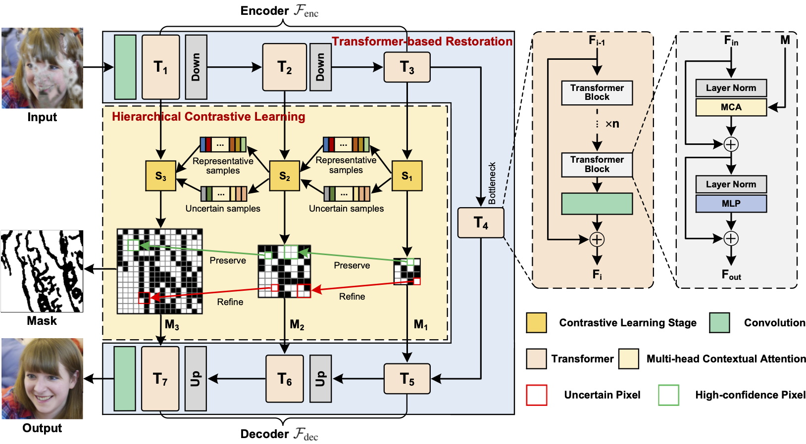

|
Yifeng Xu (徐逸峰) I am a final-year Master student in the VIPL research group at ICT, CAS, advised by Prof. Shiguang Shan and Prof. Zhenliang He. Before that, I received my B.Eng. from HITsz in 2023, advised by Prof. Wenjie Pei. I'm currently interested in generative models and their applications in computer vision / multimodal learning. Email | Google Scholar | GitHub | Blog |
{kind=link}
News |
Research* Equal contribution, † Corresponding author |
|  |
Jodi: Unification of Visual Generation and Understanding via Joint Modeling arXiv, 2025 arXiv / code / project page / bibtex Jodi is a diffusion model that unifies visual generation and understanding by jointly modeling the image domain and multiple label domains, supporting joint generation, controllable generation and image perception. |
|  |
CtrLoRA: An Extensible and Efficient Framework for Controllable Image Generation International Conference on Learning Representations (ICLR), 2025 We propose CtrLoRA, a framework that enables users to efficiently develop controllable generation models for new conditions with minimal data (~1,000 samples) and resources (< 1 hour training on a single GPU). |
|  |
Hierarchical Contrastive Learning for Pattern-Generalizable Image Corruption Detection International Conference on Computer Vision (ICCV), 2023 pdf / supp / arXiv / code / bibtex We propose a framework that automatically detects pixel-level corruption masks through hierarchical contrastive learning, enabling effective blind image restoration across diverse corruption patterns. |
Education |
|
2023.09 - Present Master Student in Computer Science, Institute of Computing Technology, CAS Advisor: Prof. Shiguang Shan |
|
|
|
2019.09 - 2023.06 B.Eng. in Computer Science, Harbin Institute of Technology, Shenzhen Advisor: Prof. Wenjie Pei |
Honors
|
|
The source code of this website is adapted from Jon Barron's website. |